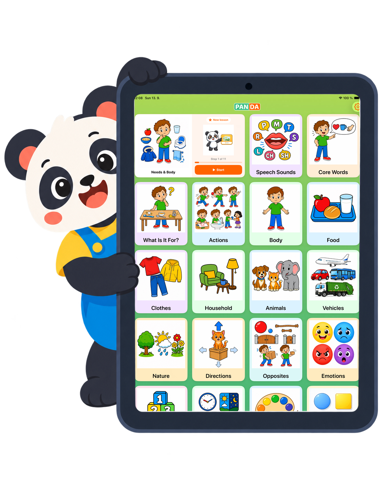
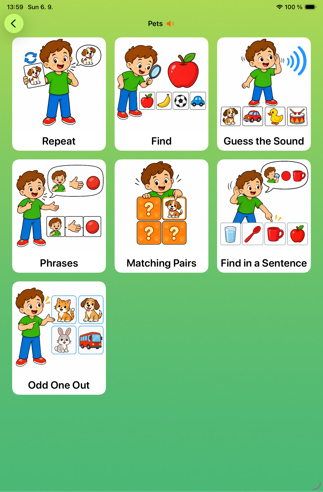

Short, parent-guided activities for first words, understanding and everyday language. Practise the same vocabulary in nine languages, at your child's own pace.
Download on the App StoreFree to download · iPhone & iPad · Requires iOS/iPadOS 15.6+
1,300+ beautifully illustrated cards, used across many different activities
No ads. No account. No microphone. No pronunciation scoring.

Designed roughly for ages 2–7, from first words to early school-age language practice. Practise at your child's own pace, in any of the languages your family uses.
Explore everyday words with clear pictures, spoken words and short, playful activities — including for children who talk later or have a speech delay.
Practise listening, choosing, categorising, understanding what things are for and using familiar words in everyday phrases.
Practise the same vocabulary and activities across the languages your family uses, without changing apps or profiles.
Short, guided activities that fit into everyday family life.
Dog · Pes · Hund · Perro · Chien · Cão · Cane · Pies
The same idea in every language your family uses.
Switch languages while keeping the same familiar pictures and activities.
PAN | DA suggests what to practise next based on your child's communication level and previous sessions. Just 5–10 minutes a day — consistency matters more than length.
Choose an activity and practise together. Repeat words, find the right picture, recognise real sounds or use familiar words in everyday phrases. The app speaks every word aloud.
See what you practised, how often and how many answers were correct. Export a PDF summary — useful for tracking progress or sharing with a speech therapist.
Repeat is free. Premium adds ten more activities: finding pictures, recognising sounds, everyday phrases, matching pairs, find in a sentence, odd one out, what is it for?, what goes together?, which group? and follow directions.
For example, in Find: the app says a word out loud, and your child points to the matching picture among a few options.

Browse the full card library, hear each word and practise together at your child's pace.
Premium also includes a separate tool for practising a target sound at the beginning, middle or end of familiar words.
Use PAN | DA in portrait or landscape. Cards and audio also work offline — at home, on the go or together at a table.
No account. No ads. Your child's practice data stays on your devices and syncs through your private iCloud account. We use pseudonymous usage statistics to improve the app.
PAN | DA uses your practice history and your child's communication level to suggest what to practise next.
Create your own cards from photos of family members or classmates. They sync across your devices through iCloud.
See what you practised, how often and how many answers were correct. Export a PDF to share with your speech therapist.
Choose the communication level that best describes how your child communicates now. The app uses it to adapt content and recommendations.
When our son was still communicating very little at preschool and we finally met with a speech and language therapist, we were advised to make him a communication book with pictures and words to help build his vocabulary. We also tried several apps, but none worked as simply as we needed.
That is how PAN | DA began — as a simple app we could use for short practice anytime and anywhere. It gradually grew with our son: everyday phrases, sounds and different ways to practise were added to the first words. Because he is growing up with Czech and English, it was important from the start that he could practise the same vocabulary in both languages.
Our son has developmental dysphasia, and his experience has shaped the app. PAN | DA can also support other young children learning first words, expanding their vocabulary or growing up with more than one language.
— Hannah & Martin, Prague
3-day free trial · then $4.99/month
3-day free trial · then $49.99/year (~$4.17/month)
We want every family to be able to try PAN | DA properly. That’s why the full card catalogue is free in every language.
Premium adds ten interactive activities and a separate tool for focused speech-sound practice. Your subscription also supports continued development of the app.
PAN | DA is an educational practice tool. It does not provide a diagnosis and does not replace advice or therapy from a qualified speech and language therapist or other professional.
PAN | DA is for children learning to communicate — whether for first words, late talkers or extra speech support between therapy sessions (including children with speech delay or developmental dysphasia), or multilingual families. There is no strict age limit; the communication level setting matters more than age.
No. PAN | DA is a home practice tool, not a diagnostic or therapeutic instrument. It works best alongside speech therapy — we recommend consulting your therapist on goals and progress.
Yes. The app focuses on vocabulary, sentence building and comprehension — areas children with speech delay or developmental dysphasia often need to practise. For specific goals and guidance, we recommend consulting a speech and language therapist; PAN | DA complements that care, it doesn't replace it.
Every day PAN | DA picks a small set of words to practise. It remembers what your child has already seen and gradually brings words back for review. This helps you choose what to focus on during a short practice session.
Child settings, practice history and custom cards are stored on your device or synced through private iCloud storage. The current version also sends pseudonymous information about taps and app usage to PAN | DA's own server to improve the app. Photos and the child's name are not included in these statistics. See the Privacy Policy for details.
Yes. You can use the cards, sounds and spoken words without an internet connection. A connection is used for iCloud sync, purchases and sending pseudonymous usage statistics.